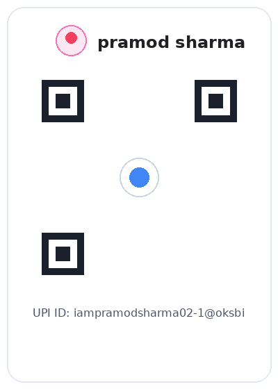

Unified learning ecosystem • Built for real study
Study smarter across school, NEET and medical education.
Structured learning, verified practice and measurable progress — without fake question counts or pretend features.
✓ Actual availability counts✓ Local progress privacy✓ GitHub Pages ready
CHOOSE YOUR PATH
One platform. Multiple academic journeys.
Active courses open the published bank. Foundation-ready courses show the structure without pretending content exists.
TELANGANA SSC
ActiveClass 10
Board-oriented written answers and MCQ practice using the currently published data.
Choose a subject
TELANGANA INTERMEDIATE
Foundation readyClass 11
Botany, Zoology, Physics and Chemistry architecture is ready for chapter-by-chapter publishing.
TELANGANA INTERMEDIATE
Foundation readyClass 12
Same structured framework for MCQs, VSAQ, SAQ, LAQ, PYQs and revision.
NEET UG
Active + migratingNEET Preparation
Practice from every currently published chapter. Requested test size is automatically capped to actual availability.
VERIFIED ONLY
Foundation readyPrevious Year Questions
PYQs will appear only after source, year and exam metadata are verified. The database is intentionally empty until then.
No fabricated PYQs.
The filter engine is reserved for verified records: year • exam • class • subject • chapter • question type.
SOURCE-AWARE SEARCH
Index foundation readyNCERT Search
Designed to return short relevant context with book/chapter metadata — never invented page numbers or full-book reproduction.
No indexed NCERT records have been published yet.
ASK SCRUTINY
AI doubt support, designed securely.
The interface is ready for a secure backend. A private AI API key will never be embedded in public client-side code.
Ask Scrutiny is currently being connected.
No fake AI answers are generated in this static preview.MEDICAL EDUCATION
ActiveMBBS
Browse all published medical subjects and launch practice from all available chapters in a subject.
STUDY TOOLS
Build consistency, not just scores.
MY PROGRESS
Your device. Your learning history.
Static deployment uses localStorage. No cloud-sync claim is made.
SUPPORT SCRUTINY ACADEMY
Help us keep learning resources open.
Support is optional. You can also help by watching, sharing and giving feedback.
